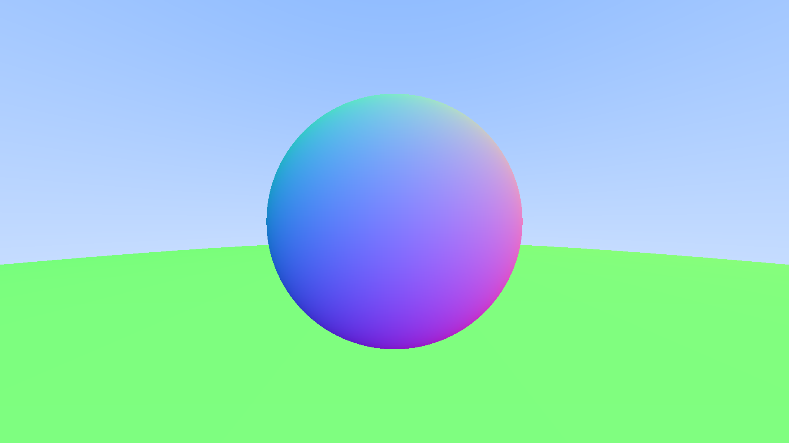

Chapter 7#
[1]:
from PIL import Image
import webgpupy as np
from functools import reduce
from time import time
[2]:
class Vec3:
def __new__(cls, x: float=0.0, y:float=0.0, z:float=0.0):
return np.array([x, y, z], dtype='float32')
Point3=Vec3
Color=Vec3
[3]:
class VecUtils:
@staticmethod
def x(data):
image_height = data.shape[0]
image_width = data.shape[1]
return data[:,:,0].reshape((image_height, image_width, 1))
@staticmethod
def y(data):
image_height = data.shape[0]
image_width = data.shape[1]
return data[:,:,1].reshape((image_height, image_width, 1))
@staticmethod
def z(data):
image_height = data.shape[0]
image_width = data.shape[1]
return data[:,:,2].reshape((image_height, image_width, 1))
@staticmethod
def unit_vector(data):
e0 = VecUtils.x(data)
e1 = VecUtils.y(data)
e2 = VecUtils.z(data)
return data / np.sqrt((e0*e0+e1*e1+e2*e2))
@staticmethod
def dot(data1, data2):
data1_x = VecUtils.x(data1)
data1_y = VecUtils.y(data1)
data1_z = VecUtils.z(data1)
data2_x = VecUtils.x(data2)
data2_y = VecUtils.y(data2)
data2_z = VecUtils.z(data2)
return data1_x * data2_x + data1_y * data2_y + data1_z * data2_z
[4]:
class Rays:
def __init__(self, origin, direction) -> None:
self.orig = origin
self.dir = direction
def origin(self):
return self.orig
def direction(self):
return self.dir
def at(self, t):
return self.orig + t*self.dir
[ ]:
FARAWAY = np.array([1.0e37])
def convert_to_image(pixels):
print(pixels.shape)
pixels = (pixels * 255.0).astype('uint8')
pixels = pixels.tolist()
print(time() - start)
import numpy
image_array = numpy.array(pixels, dtype= 'uint8')
return Image.fromarray(image_array, 'RGB')
[6]:
class Sphere:
def __init__(self, center, radius: float) -> None:
self.radius = radius
self.center = center
def hit(self, r: Rays):
oc = r.origin() - self.center
a = VecUtils.dot(r.direction(), r.direction())
half_b = VecUtils.dot(oc, r.direction())
c = VecUtils.dot(oc, oc) - self.radius*self.radius
discriminant = half_b*half_b - a*c
sqrtd = np.sqrt(np.maximum(0.0, discriminant))
root1 = (-half_b - sqrtd) / a
root2 = (-half_b + sqrtd) / a
root = np.where((root1 > 0.0) & (root1 < root2), root1, root2)
pred = (discriminant > 0.0) & (root > 0.0)
return np.where(pred, root, FARAWAY)
def color(self, r: Rays, t, hit):
t = t * hit.astype('float32')
hit_point = r.at(t)
outward_normal = (hit_point - self.center) / self.radius
front_face = VecUtils.dot(r.direction(), outward_normal) < 0.0
normal = np.where(front_face, outward_normal, -outward_normal)
normal = np.where(hit, normal, 0.0)
return normal
class World:
def __init__(self) -> None:
self.hittable_list = []
def add(self, object):
self.hittable_list.append(object)
def color(self, rays: Rays):
t_values = []
for object in self.hittable_list:
t_values.append(object.hit(rays))
nearest = reduce(np.minimum, t_values)
image_shape = rays.origin().shape
color = np.zeros(image_shape)
for (s, t) in zip(self.hittable_list, t_values):
hit = (nearest != FARAWAY) & (t == nearest)
if np.any(hit):
color += s.color(rays, t, hit)
return (color, nearest == FARAWAY)
[7]:
def ray_color(rays: Rays, world):
(world_color, not_hit) = world.color(rays)
hit = np.invert(not_hit)
world_color = 0.5 * (world_color + 1.0) * hit.astype("float32")
dir = rays.direction()
unit_direction = VecUtils.unit_vector(dir)
t = 0.5*(VecUtils.y(unit_direction) + 1.0)
is_not_hit_color = ((1.0-t)*Color(1.0, 1.0, 1.0) + t*Color(0.5, 0.7, 1.0)) * not_hit.astype("float32")
return world_color + is_not_hit_color
[8]:
image_height = 1080
aspect_ratio = 16/9
image_width = int(image_height * aspect_ratio)
start = time()
viewport_height = 2.0
viewport_width = aspect_ratio * viewport_height
focal_length = 1.0
origin = Point3(0.0, 0.0, 0.0)
horizontal = Vec3(viewport_width, 0.0, 0.0)
vertical = Vec3(0, viewport_height, 0.0)
lower_left_corner = origin - horizontal/2.0 - vertical/2.0 - Vec3(0.0, 0.0, focal_length)
origin = np.broadcast_to(origin, (image_height, image_width, 3))
u = np.array([[i/(image_width - 1) for i in range(0, image_width)]])
u = np.repeat(u, image_height, axis=0).reshape([image_height, image_width, 1])
v = np.array([i/(image_height - 1) for i in range(image_height-1, -1, -1)]).reshape([image_height, 1])
v = np.repeat(v, image_width, axis=1).reshape([image_height, image_width, 1])
direction = lower_left_corner + u*horizontal + v*vertical - origin
rays = Rays(origin, direction)
world = World()
world.add(Sphere(Point3(0.0,-100.5,-1.0), 100.0))
world.add(Sphere(Point3(0.0,0.0,-1.0), 0.5))
pixels = ray_color(rays, world)
convert_to_image(pixels)
[1080, 1920, 3]
0.7009310722351074
[8]:
